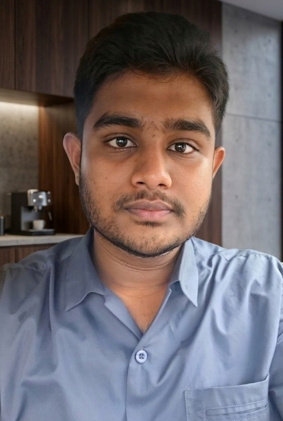

2025 — 2029 · Expected
Dhaka, Bangladesh · CSE Student
Abdullah Alwasi
M. Efaz
Cybersecurity | systems | cloud | AI | Tech Enthusiast
Computer Science & Engineering student at the Islamic University of Technology, building strong foundations in programming, Linux, networking, and security while exploring cloud and AI/ML.

Efaz · CSE '29
01
About Me
I am a Computer Science & Engineering student at Islamic University of Technology. My interests sit where software meets infrastructure: cybersecurity, networks, cloud systems, and the technologies that keep modern computing reliable and secure.
I am still early in the journey, so I care more about building real fundamentals than collecting buzzwords. I work with C, Linux, Git/GitHub, HTML, networking concepts, and hands-on projects while gradually expanding toward AI/ML and cloud computing.
02
Education Path
Passed · 2024
Notre Dame College, Dhaka
Passed · 2022
Government Laboratory High School, Dhaka
03
Skills & Direction
Current toolkit
C01
HTML02
Linux03
Git / GitHub04
Networking05
Cybersecurity06
Cybersecurity
Building fundamentals in secure systems, networking, Linux, and security thinking.
Cloud
Exploring cloud infrastructure, deployment concepts, and scalable systems.
AI / ML
Developing the mathematical and programming foundation needed to move deeper into AI/ML.
Networking
Learning how devices, protocols, and services communicate across real systems.
Web Development
Using web fundamentals to build and publish clean, useful interfaces — including this portfolio.
04
Selected Work
Featured project · Game
IUT Red Box
A C-based game project built with raylib. The repository uses a modular source structure for game, player, enemy, and level logic, with dedicated assets and audio — a practical step from classroom programming toward a larger working codebase.
Currently exploring
Learning with a systems-first mindset.
05
Get In Touch
Open to learning, collaboration, and conversations around security, systems, cloud, and technology.
GitHub
@abdullahalwasi-pix ↗
Location
Dhaka, Bangladesh
Professional email & CV can be added when ready.